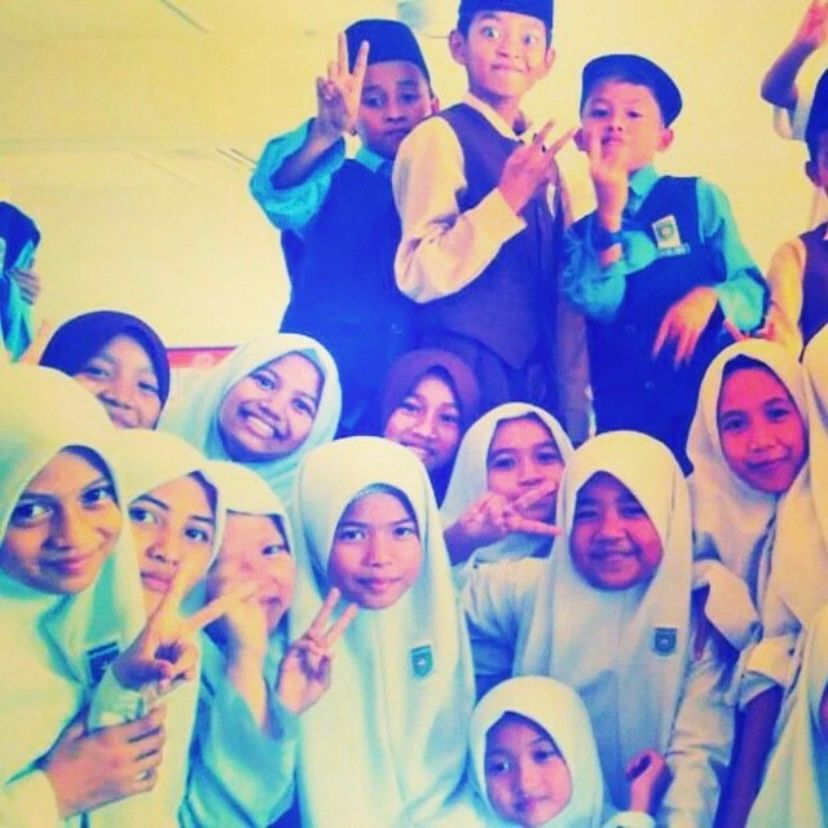
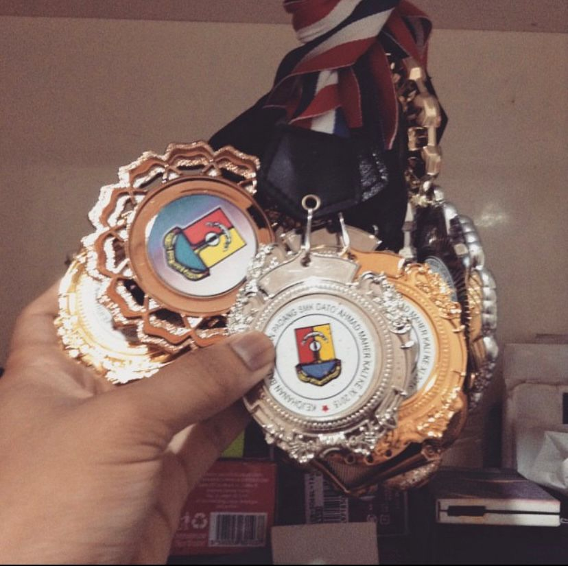

Primary school introduced me to the thrill of sports. I began with handball in my final year, balancing training and studying for exams like UPSR. Despite challenges, my dedication paid off with unexpected academic success.
I embraced sports more in secondary school, focusing on track and field due to the absence of handball. Adapting to new sports like badminton enriched my athletic journey, teaching me resilience and teamwork.
Reflecting on these experiences, I'm grateful for the life lessons sports taught me—perseverance, discipline, and the joy of achievement.